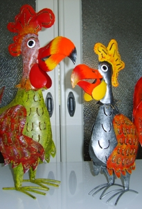

Voorwaarden
Operatie
Bij de operatieprijs is een (nek)kraag of Medical Pet Shirt (MPS) e/o ProCollar niet inbegrepen.
Controle van de operatiewond is gratis. Eventuele extra voorgeschreven of toegediende medicatie, bv. wondzalf, antibiotica e/o pijnstilling, dient direct afgerekend te worden na de controle.
Zou de patiënt nogmaals geopereerd moeten worden, als er door overmacht een (na)bloeding ontstaat op de dag van de operatie, dan betaalt u enkel de narcose, operatiemateriaal en voorgeschreven medicatie. De operatietijd nemen wij voor onze rekening.
Verwijdert de hond/kat ten gevolge van het niet dragen van een kraag e/o Medical Pet Shirt of ProCollar zijn/haar hechtingen, dan zijn de kosten van de nabehandeling volledig voor uw rekening. Houdt de patiënt dus met regelmaat in de gaten en bel bij twijfel tijdig voor een kosteloze controle van de operatiewond.
Ruilen van producten
Binnen 7 dagen ruilen na de factuurdatum, mits de originele verpakking(en) onbeschadigd en ongebruikt is(/zijn) en op vertoon van de originele factuur, logboek, e/o kassabon. Op verzoek bestelde producten kunnen niet worden teruggenomen. Ook worden koelkastproducten niet retour genomen.
Bij terugname van producten worden administratiekosten berekend. Er worden enkel volledige eenheden teruggenomen. Medicatie die over de datum is, dient u als "chemisch" afval af te voeren via het milieupark.
Betaling
Liefst per pin of contant. Ook facturen van verzekerde huisdieren dienen direct per pin of a contant te worden voldaan. Er wordt niet gewerkt op factuur.
We accepteren geen biljetten van 200 en 500 euro.
Betalingscondities
Er wordt gewerkt volgens de algemene voorwaarden van de Koninklijke Nederlandse Maatschappij voor Dierenartsen, gedeponeerd ter griffie van de Arrondissementsrechtbank te Utrecht onder nummer 22/2008.
Uitleg factuur
| H | hoog BTW-tarief = 21% |
|---|---|
| L | laag BTW-tarief = 9% |
| 0 | geen BTW-tarief = 0% |
Factuurbedrag is altijd in euro’s.
